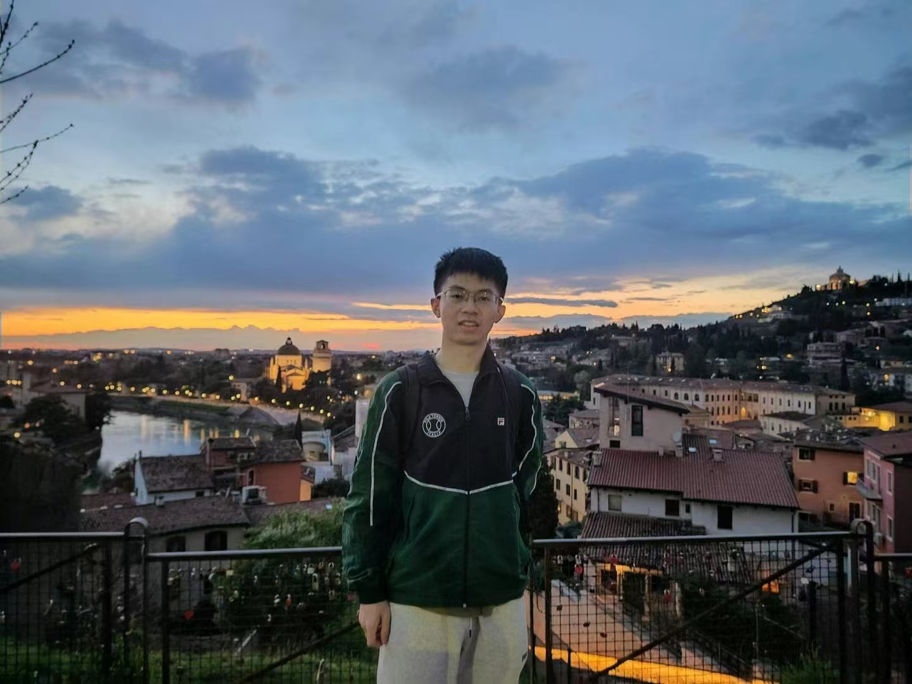

I am a PhD student at the MIT Center for Computational Science and Engineering (CCSE), where I fortunately work with Professors Asu Özdağlar and Saurabh Amin. I am a 2026–2027 MIT Schwarzman College of Computing PhD Fellow.
Before joining MIT, I earned a B.S. in applied and computational mathematics from Peking University in 2025.
My research focuses on algorithm design and theoretical analysis in optimization, learning, and EconCS.
A central question in my work is what information, and how much of it, is truly needed to make optimal decisions. To address this, I develop learning algorithms that preserve decision quality while minimizing both the amount of information required and the size of the resulting optimization models. This work lies along the lines of beyond-worst-case analysis and data-driven algorithm design, connecting ideas from mechanism design, optimization, learning theory, and computational complexity.
Silver Rate Is (Almost) Optimal for Gradient Descent: The Strongly Convex Case
Kaizhao Liu, †. arXiv preprint, 2026. [slides]
Silver Rate Is (Almost) Optimal for Gradient Descent
, Kaizhao Liu†. arXiv preprint, 2026. [blog] [slides]
Improved Gradient Descent Lower Bounds Beyond Nesterov
, Kaizhao Liu. arXiv preprint, 2026.
The Geometry of Linear Program Compression: An Exact Characterization and Learning Algorithm
, Omar Bennouna. NeurIPS 2026.
. NeurIPS 2026.
Learning Decision-Sufficient Representations for Linear Optimization
, Saurabh Amin, Asuman Özdağlar. COLT 2026. [slides] · STOC 2026 workshop: Machine Learning for Algorithms. [slides]
, Ying Cui, Jingyi Wang. ICML 2025, oral. [poster]
Silver Rate Is (Almost) Optimal for Gradient Descent: The Strongly Convex Case
Kaizhao Liu, †. arXiv preprint, 2026. [slides]
Silver Rate Is (Almost) Optimal for Gradient Descent
, Kaizhao Liu†. arXiv preprint, 2026. [blog] [slides]
Improved Gradient Descent Lower Bounds Beyond Nesterov
, Kaizhao Liu. arXiv preprint, 2026.
, Ying Cui, Jingyi Wang. ICML 2025, oral. [poster]
. NeurIPS 2026.
Learning Decision-Sufficient Representations for Linear Optimization
, Saurabh Amin, Asuman Özdağlar. COLT 2026. [slides] · STOC 2026 workshop: Machine Learning for Algorithms. [slides]
The Geometry of Linear Program Compression: An Exact Characterization and Learning Algorithm
, Omar Bennouna. NeurIPS 2026.
Feel free to reach out to me at:
I like playing chess, while I am struggling to improve my ELO on chess.com. I also play other strategy games.